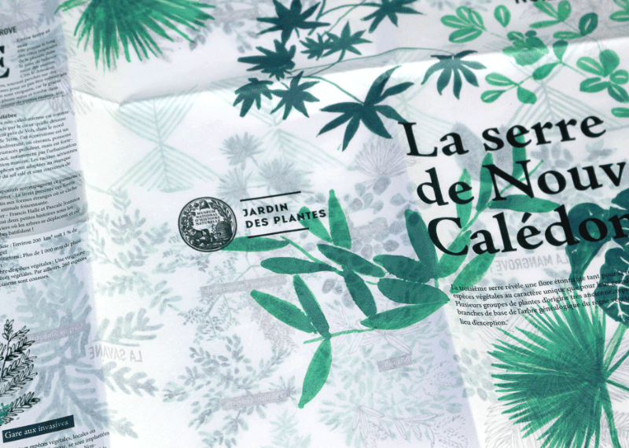

Les serres du Muséum, design éditorial, 2016.
42 × 59,4 cm, recto verso, imprimé sur papier 80g.
Projet fictif entre illustration botanique et micro-cartographie,
ce dépliant accompagne le visiteur dans sa visite
des serres du muséum d'histoire naturelle de Paris.
L'impression est réalisée sur un papier à petit grammage,
presque transparent, qui fait référence à
l'architecture fragile des serres.